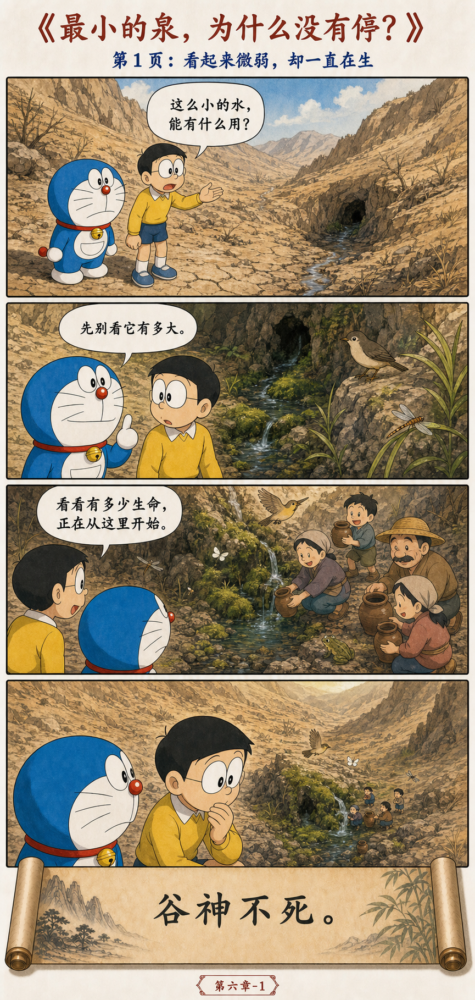
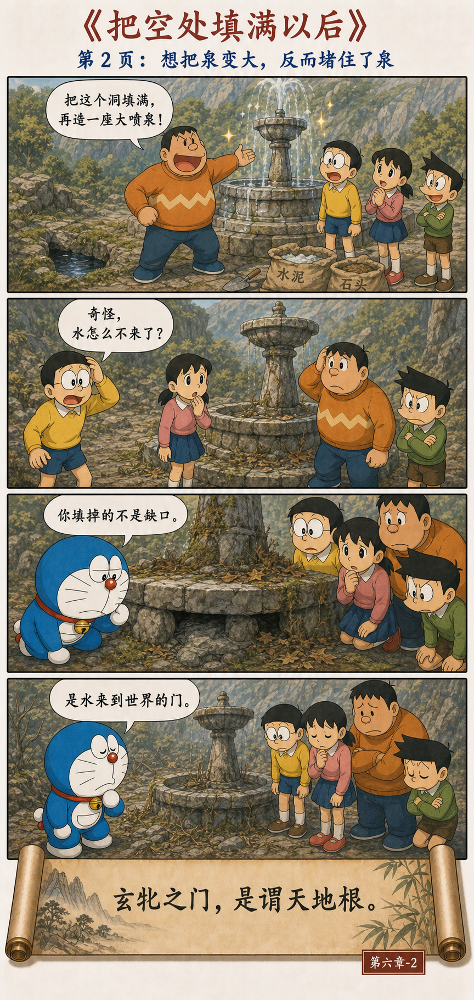
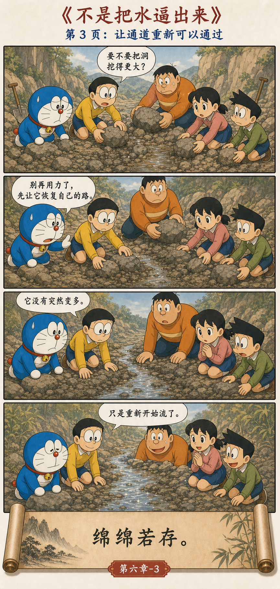
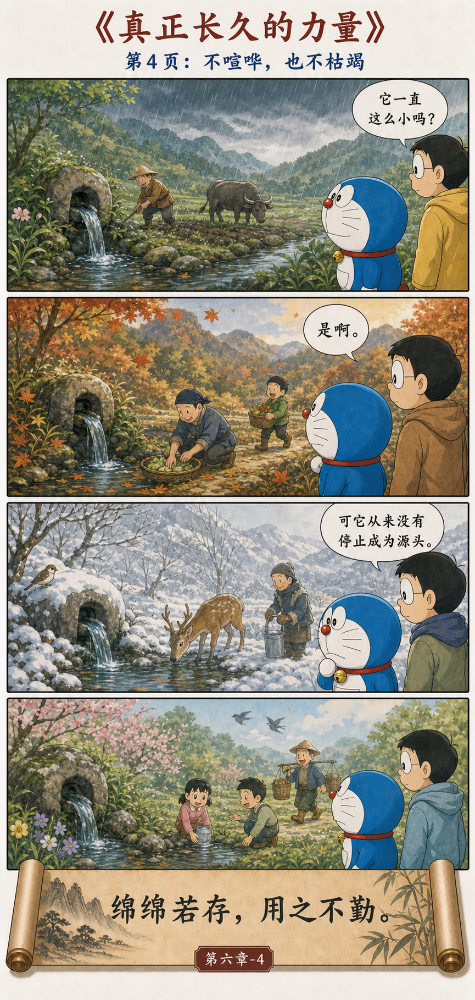

绵绵若存，用之不勤
谷神不死，是谓玄牝。
玄牝之门，是谓天地根。
绵绵若存，用之不勤。
The valley spirit never dies; it is called the mysterious feminine. The gate of the mysterious feminine is called the root of heaven and earth. Continuous, it seems barely present, yet its use is never exhausted.
因为能容纳，所以能不断生出
山谷看起来是“空”的，却能汇集雨水、孕育草木；泉眼看起来柔弱，却能日日流出新水。老子用“谷”与“牝”指向一种不争抢形状、却持续生成生命的力量。
“不勤”不是懒惰，而是不靠紧张的强迫来维持。它留下空间，让新的水、新的想法和新的人能够进入。
一眼小泉，怎样变成村庄的水源




空，不是缺少；空是用途发生的地方
杯子因为中间是空的才能盛水，房间因为留有空处才能住人，谈话因为有人暂时不说话才容得下另一种声音。把一切都塞满，往往也把变化的入口堵住。
没有被占满的地方，才有可能继续生成。
柔与不勤，不等于消极等待
泉眼堵了仍要疏通，水渠破了仍要修补。第六章反对的不是行动，而是把行动理解成持续加压。好的照料常常是完成关键工作之后，允许系统自己生长。
给生活留一眼不会枯竭的泉
团队不要把每一分钟排满，要给复盘和新想法留白；关系里不要用控制换安全，要让彼此能呼吸；个人也不必把每次休息视作浪费。恢复力来自可以重新生成，而不是永远透支。